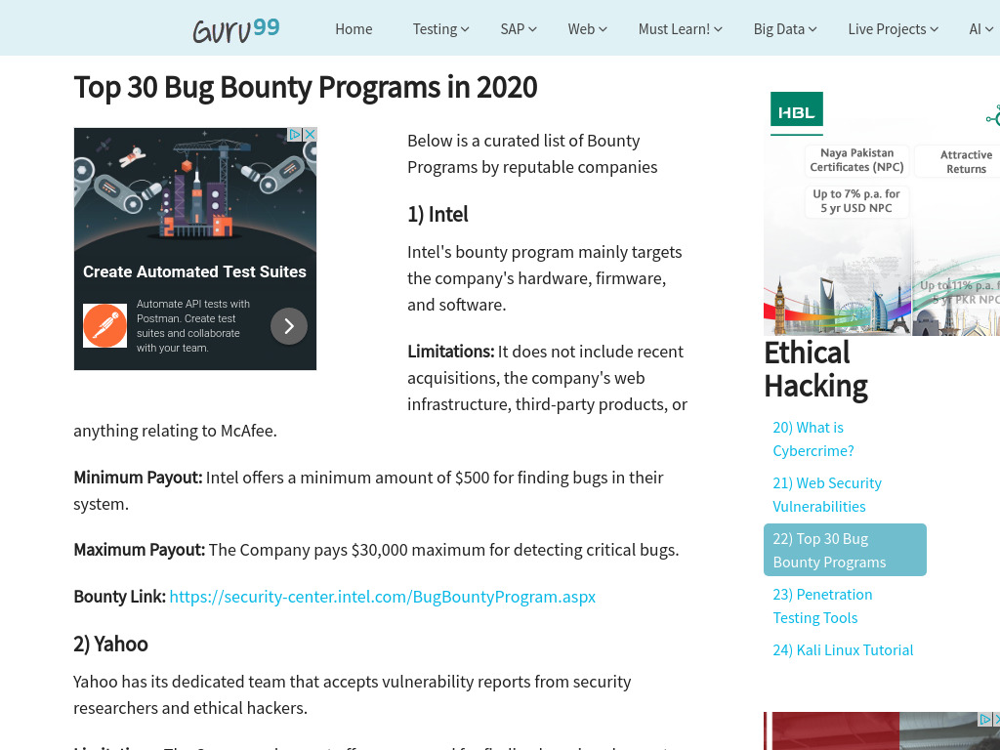
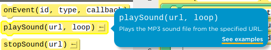
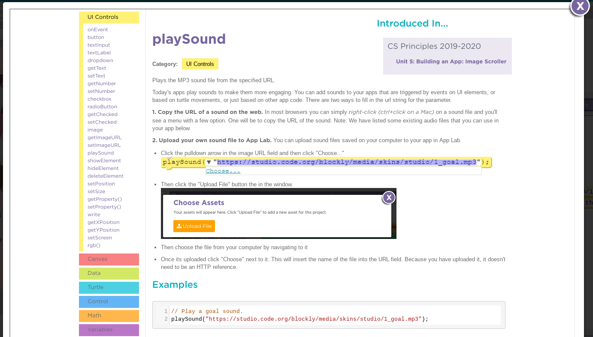
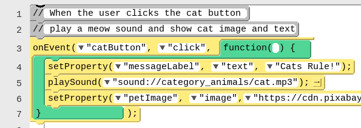

Your friend calls and says, “I can’t get music to come out of my speakers, can you help?” Write a quick list of everything you would ask them or have them check to try to fix the problem.
Today we are going to practice programming, but we are also going to practice a very important skill that goes with it, called debugging. Let’s see what that looks like.
A short Code.org video on a repeatable process for finding and fixing bugs.
Even big companies make mistakes, and they will even pay you to find them. On the next slide is a link to a list of bug bounty programs run by many big tech companies.
A bug bounty program shows that a company cares about fixing its mistakes rather than hiding them out of embarrassment.

Skim the list. Is there anything that stands out to you? Name one program or detail you found interesting or surprising.
Debugging is the process of finding and fixing problems in code. It follows four repeating stages.
What do you expect it to do? What does it actually do? Does it always happen?
Are there warnings or errors? What did you change most recently? Explain your code to someone else, and look for code related to the problem.
Make one small change at a time so you can tell what actually fixed the problem.
What have you learned? What strategies did you use? What questions do you still have?
It is important to keep track of your debugging process. As you start to identify common mistakes, you will be able to avoid them.
Part of the AP test that we complete in class, whether or not you are taking the exam, is writing a program. You will need to answer questions about your process and explain how you found and fixed problems in your code.
Start practicing now. When we go to Code.org on the next slide, you will be debugging some programs, so keep notes as you work.
Set up a team with your partner:
In the top right corner, click your name.
Click Pair Programming.
Choose your partner’s name.
Alternate the driver and navigator roles.
Make sure to Run and click Finish when you complete each level. This gives the navigator a copy of your work.
If you were using the debugging process, you should have some notes of good debugging tips. Share those with your partner and add any new ones you forgot. Post one tip below. No duplicates: if yours is already posted, post a different one.
Documentation: a written description of how a command or piece of code works or was developed. In App Lab, hovering a block or opening its help page shows the documentation for that command.
Comment: a form of program documentation written into the program to be read by people, which does not affect how the program runs.

Documentation: block hover tip

Documentation: full help page

Comments: written into the program